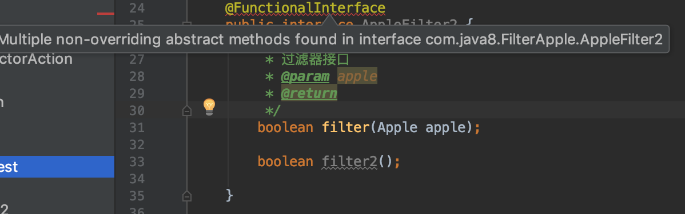

[TOC]
lambda
需求不断变化的找苹果
函数式编程，方法和Lambda作为一等公民
public class Apple {
private String color;
private long weight;
public Apple() {
}
public Apple(String color, long weight) {
this.color = color;
this.weight = weight;
}
public String getColor() {
return color;
}
public void setColor(String color) {
this.color = color;
}
public long getWeight() {
return weight;
}
public void setWeight(long weight) {
this.weight = weight;
}
@Override
public String toString() {
return "Apple{" +
"color='" + color + '\'' +
", weight=" + weight +
'}';
}
}
@FunctionalInterface
public interface AppleFilter {
/**
* 过滤器接口
* @param apple
* @return
*/
boolean filter(Apple apple);
}
public static List<Apple> findApple(List<Apple> apples, AppleFilter appleFilter) {
List<Apple> list = new ArrayList<>();
for (Apple apple : apples) {
if (appleFilter.filter(apple)) {
list.add(apple);
}
}
return list;
}
// lambda表达式，找到绿色的苹果
List<Apple> lambdaResult = findApple(list, apple -> apple.getColor().equals("green"));
java8 与 java7 内存空间的区别
^Cmubi@mubideMacBook-Pro Home $ pwd
/Library/Java/JavaVirtualMachines/jdk1.7.0_80.jdk/Contents/Home
mubi@mubideMacBook-Pro Home $ bin/jstat -gcutil 62850 1000 10
Warning: Unresolved Symbol: sun.gc.generation.2.space.0.capacity substituted NaN
Warning: Unresolved Symbol: sun.gc.generation.2.space.0.used substituted NaN
Warning: Unresolved Symbol: sun.gc.generation.2.space.0.capacity substituted NaN
S0 S1 E O P YGC YGCT FGC FGCT GCT
0.00 85.81 76.97 56.33 � 161 1.624 14 0.603 2.227
0.00 85.81 77.08 56.33 � 161 1.624 14 0.603 2.227
0.00 85.81 77.22 56.33 � 161 1.624 14 0.603 2.227
0.00 85.81 77.33 56.33 � 161 1.624 14 0.603 2.227
^Cmubi@mubideMacBook-Pro Home $ jstat -gcutil 62850 1000 10
S0 S1 E O M CCS YGC YGCT FGC FGCT GCT
0.00 85.81 78.86 56.33 93.46 89.80 161 1.624 14 0.603 2.227
0.00 85.81 78.93 56.33 93.46 89.80 161 1.624 14 0.603 2.227
0.00 85.81 79.04 56.33 93.46 89.80 161 1.624 14 0.603 2.227
0.00 85.81 79.17 56.33 93.46 89.80 161 1.624 14 0.603 2.227
0.00 85.81 79.29 56.33 93.46 89.80 161 1.624 14 0.603 2.227
^Cmubi@mubideMacBook-Pro Home $
java7:
- S0 — Heap上的 Survivor space 0 区已使用空间的百分比
- S1 — Heap上的 Survivor space 1 区已使用空间的百分比
- E — Heap上的 Eden space 区已使用空间的百分比
- O — Heap上的 Old space 区已使用空间的百分比
- P — Perm space 区已使用空间的百分比
- YGC — 从应用程序启动到采样时发生 Young GC 的次数
- YGCT– 从应用程序启动到采样时 Young GC 所用的时间(单位秒)
- FGC — 从应用程序启动到采样时发生 Full GC 的次数
- FGCT– 从应用程序启动到采样时 Full GC 所用的时间(单位秒)
- GCT — 从应用程序启动到采样时用于垃圾回收的总时间(单位秒)
java8:
少了一个 Perm space
新增了
- M - 元空间（Metaspace）： Klass Metaspace, NoKlass Metaspace
- CCS - 表示的是NoKlass Metaspace的使用率
@FunctionalInterface 接口使用条件
只能定义了唯一的抽象方法的接口
如下的默认方法不是，不是抽象方法

如下正确: 函数式接口里允许定义默认方法和静态方法,也可以包含Object里的public方法
@FunctionalInterface
public interface AppleFilter2 {
boolean filter(Apple apple);
default boolean filter2(){
return true;
}
static boolean filter3(){
return true;
}
@Override
boolean equals(Object obj);
@Override
String toString();
}
lambda的使用
基本语法
(parameters) -> expression
(parameters) -> { statements; }
(1) () -> {}
(2) () -> "Raoul"
(3) () -> {return "Mario";}
(4) (Integer i) -> return "Alan" + i;
(5) (String s) -> {"IronMan";}
(4),(5) 无效
(4) 需要加上`{}`
(5) 需要去掉`{}`和`;`
java8源码使用lambda的场景
@FunctionalInterface
public interface Comparator<T> {
@FunctionalInterface
public interface Runnable {
@FunctionalInterface
public interface Function<T, R> {
复合式lambda表达式
比较器复合
逆序
比较器链
谓词复合
negate,and,or
- 函数复合
Funtion接口
《java8 in action》 lambda总结
Lambda表达式可以理解为一种匿名函数:它没有名称，但有参数列表、函数主体、返回类型，可能还有一个可以抛出的异常的列表。Lambda表达式让你可以简洁地传递代码。- 函数式接口就是仅仅声明了一个抽象方法的接口。
- 只有在接受函数式接口的地方才可以使用Lambda表达式。
Lambda表达式允许你直接内联，为函数式接口的抽象方法提供实现，并且将整个表达式作为函数式接口的一个实例。- Java 8自带一些常用的函数式接口，放在
java.util.function包里，包括Predicate<T>、Function<T,R>、Supplier<T>、Consumer<T>和BinaryOperator<T> - 为了避免装箱操作，对
Predicate<T>和Function<T, R>等通用函数式接口的原始类型 特化:IntPredicate、IntToLongFunction等。 - 环绕执行模式(即在方法所必需的代码中间，你需要执行点儿什么操作，比如资源分配 和清理)可以配合Lambda提高灵活性和可重用性。
Lambda表达式所需要代表的类型称为目标类型。- 方法引用让你重复使用现有的方法实现并直接传递它们。
Comparator、Predicate和Function等函数式接口都有几个可以用来结合Lambda表达式的默认方法。
lambda表达式 与 JVM字节码
匿名内部类 jvm字节码
- InnerClass.java
import java.util.function.Function;
public class InnerClass {
Function<Object, String> f = new Function<Object, String>() {
@Override
public String apply(Object obj) {
return obj.toString();
} };
}
javac InnerClass.java
生成
InnerClass$1.class
InnerClass.class
javap -c -v InnerClass查看字节码和常量池
public com.other.InnerClass();
descriptor: ()V
flags: ACC_PUBLIC
Code:
stack=4, locals=1, args_size=1
0: aload_0
1: invokespecial #1 // Method java/lang/Object."<init>":()V
4: aload_0
5: new #2 // class com/other/InnerClass$1
8: dup
9: aload_0
10: invokespecial #3 // Method com/other/InnerClass$1."<init>":(Lcom/other/InnerClass;)V
13: putfield #4 // Field f:Ljava/util/function/Function;
16: return
LineNumberTable:
line 4: 0
line 5: 4
}
通过字节码操作
new，一个InnerClass$1类型的对象被实例化了。与此同时，一个指向新创建对象的引用会被压入栈。dup操作会复制栈上的引用。接着，这个值会被
invokespecial指令处理，该指令会初始化对象。栈顶现在包含了指向对象的引用，该值通过
putfield指令保存到了LambdaBytecode类的f1字段
lambda 字节码
import java.util.function.Function;
public class Lambda {
Function<Object, String> f = obj -> obj.toString();
}
public com.other.Lambda();
descriptor: ()V
flags: ACC_PUBLIC
Code:
stack=2, locals=1, args_size=1
0: aload_0
1: invokespecial #1 // Method java/lang/Object."<init>":()V
4: aload_0
5: invokedynamic #2, 0 // InvokeDynamic #0:apply:()Ljava/util/function/Function;
10: putfield #3 // Field f:Ljava/util/function/Function;
13: return
LineNumberTable:
line 5: 0
line 6: 4
}
创建额外的类现在被invokedynamic指令替代了
invokedynamic 指令
字节码指令invokedynamic最初被JDK7引入，用于支持运行于JVM上的动态类型语言。执行方法调用时，invokedynamic添加了更高层的抽象，使得一部分逻辑可以依据动态语言的特征来决定调用目标。这一指令的典型使用场景如下:
def add(a, b) { a + b }
这里a和b的类型在编译时都未知，有可能随着运行时发生变化。由于这个原因，JVM首次执行invokedynamic调用时，它会查询一个bootstrap方法，该方法实现了依赖语言的逻辑，可以决定选择哪一个方法进行调用。bootstrap方法返回一个链接调用点(linked call site)。很多情况下，如果add方法使用两个int类型的变量，紧接下来的调用也会使用两个int类型的值。所以，每次调用也没有必要都重新选择调用的方法。调用点自身就包含了一定的逻辑，可以判断在什么情况下需要进行重新链接。
invokedynamic指令将实现Lambda表达式的这部分代码的字节码生成推迟到运行时
Lambda表达式的代码块到字节码的转换由高层的策略变成了存粹的实现细节。它现在可以动态地改变，或者在未来版本中得到优化、修改，并且保持了字节码的后向兼容性
没有带来额外的开销，没有额外的字段，也不需要进行静态初始化，而这些如果不使用 Lambda，就不会实现。
对无状态非捕获型Lambda，我们可以创建一个Lambda对象的实例，对其进行缓存，之后 对同一对象的访问都返回同样的内容。这是一种常见的用例，也是人们在Java 8之前就惯用的方式;比如，以static final变量的方式声明某个比较器实例。
没有额外的性能开销，因为这些转换都是必须的，并且结果也进行了链接，仅在Lambda 首次被调用时需要转换。其后所有的调用都能直接跳过这一步，直接调用之前链接的实现
将Lambda表达式的代码体填入到运行时动态创建的静态方法, 类似如下
public class Lambda {
Function<Object, String> f = [dynamic invocation of lambda$1]
static String lambda$1(Object obj) {
return obj.toString();
} }